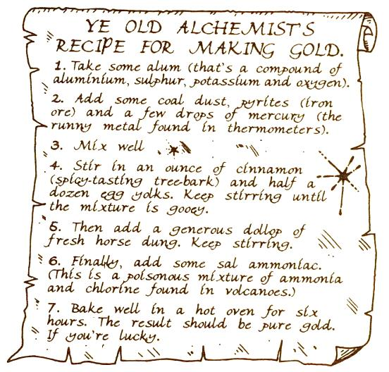
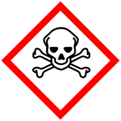
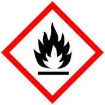
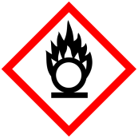
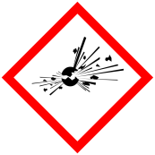
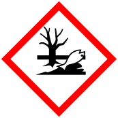
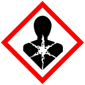
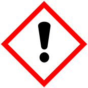
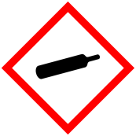
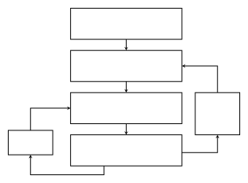

Introduction
What Chemistry Is All About
Have you ever wondered why ice melts and water evaporates? Why do leaves change colour in autumn? How does a battery produce electricity, or why does food last longer in a refrigerator?
Chemistry helps us answer these questions. It connects everyday observations with explanations about substances, their properties, and the changes they undergo. Chemistry helps explain why a match burns, how medicines are developed, and what happens inside distant stars.
From practical knowledge to modern chemistry
Early practical chemistry
Long before chemistry became a science, people extracted metals, fired clay to make ceramics and glass, and produced dyes. They knew how to carry out these processes, but they could not yet explain why they worked.

Alchemy
From antiquity onwards, alchemical traditions developed across many cultures, including ancient Egypt, China, India, the medieval Islamic civilisation, and Europe. Many alchemists tried to turn inexpensive metals into gold or silver. They did not succeed, but they developed useful techniques for heating, mixing, dissolving, and separating substances.
The beginnings of modern chemistry
In the seventeenth century, chemists increasingly focused on experiments and clearly defined substances. In 1661, Robert Boyle published The Sceptical Chymist. He challenged the ancient idea that all matter consisted of earth, air, fire, and water and helped shape the modern concept of chemical elements.
As we study chemistry, we constantly move between two different levels:
Macroscopic level
What we can observe and measure directly, for example colour changes, temperature changes, or the formation of a gas.
Submicroscopic level
Models that explain observations using particles such as atoms, molecules, and ions, which are too small to see directly.
Chemistry Today
Chemistry connects physics and biology. For a first overview, it is often described through four broad academic fields. In practice, these fields overlap and work together.
- Physical chemistry
Explains how and why chemical processes occur. It uses ideas such as energy, temperature, pressure, and reaction rate.
Example: Why does a reaction become faster when the temperature rises?
- Inorganic chemistry
Studies elements and compounds that are not primarily based on carbon, including metals, salts, minerals, acids, bases, and crystals.
Example: How do metals react with acids?
- Analytical chemistry
Determines what a sample contains and how much of each substance is present. It uses methods such as chromatography.
Example: How much vitamin C is present in a drink?
- Organic chemistry
Studies carbon-based compounds, including fuels, plastics, medicines, sugars, fats, and many substances found in living organisms.
Example: How can a medicine be synthesised?
Chemistry in research, industry and society
Outside the traditional academic fields, chemists often work in interdisciplinary areas. These fields combine chemistry with medicine, biology, environmental science, technology, and industrial production. They can lead to careers in the pharmaceutical, energy, materials, environmental, and manufacturing industries. Here are a few examples:
| Biochemistry: chemical processes in living organisms | Medicinal chemistry: discovery and development of medicines |
| Neurochemistry: chemical processes in the nervous system and brain | Environmental chemistry: chemical processes in nature and the effects of pollution |
| Materials science: development and testing of new materials | Nuclear chemistry: radioactive substances and nuclear processes |
| Chemical engineering: safe and efficient large-scale chemical production | Computational chemistry: computer models and simulations of molecules and reactions |
GHS Hazard Pictograms
In 2008 the EU decided to adopt the Globally Harmonized System of Classification and Labelling of Chemicals, GHS system for short. It was designed to replace the various classification and labelling standards used in different countries by using consistent criteria for classification and labelling on a world-wide level.
The table on the following page shows the GHS pictograms together with their meaning and examples. Complete the table by describing the main hazard represented by each pictogram.
| GHS pictogram | description of danger | example |
|---|---|---|
 | Botulinum toxin (Botox) | |
 | petrol BE | |
 | potassium nitrate (in black powder) | |
 | black powder | |
| sulphuric acid | ||
 | mercury | |
 | substances containing lead | |
 | cleaning agents | |
 | hydrogen |
Scientific Method
People have always used observation, practical experience, and reasoning to understand the physical world. Modern science combines these approaches. Scientific explanations must be tested against evidence and remain open to revision when new evidence becomes available.
A scientific investigation
The scientific approach usually contains the following steps:

Lab Reports
Experiments generate information that must be recorded clearly. A lab journal and a lab report serve different purposes, but both should allow the work to be understood and checked later.
Lab journal
A direct record made before and during the experiment. It includes the date, materials, setup, procedure, changes to the procedure, measurements, and observations.
Lab report
A structured account written after the experiment. It presents the research question, method, results, interpretation, and conclusion for a reader.
During this course: a simplified lab report
Unless you receive different instructions, use the following structure. The aim is to separate what you did and observed from how you explain the results.
| Section | What to include |
|---|---|
| Title | Give the experiment a clear title and record when it was carried out. |
| Hypothesis | State what you expect to happen and briefly explain why. |
| Methods and Materials | A description of the setup, substances, procedure, and safety measures. |
| Results and Discussion | Present the observations and measurements first. Then explain and interpret them. |
| Conclusion | Answer the research question and summarise the main finding. |
A full scientific lab report
For a larger project, such as a Matura project or later university work, a report may contain the following sections. The exact structure depends on the subject and the instructions provided.
| Section | Purpose and content |
|---|---|
| Title page | Title, author, institution or course, and date. |
| Abstract | A brief summary of the question, method, main result, and conclusion on the title page. |
| Introduction | Context, motivation, research question, and a hypothesis. |
| Theory / Background | Relevant scientific concepts, equations, and information from reliable sources. |
| Methods and Materials | A precise, reproducible description of the setup, substances, procedure, and safety measures. |
| Results and Discussion | Processed data, tables, graphs, calculations, and observations. Present the evidence clearly before discussing it. Interpret the results, compare them with the hypothesis or theory, and evaluate uncertainty, limitations, and possible errors. |
| Conclusion and Outlook | Answer the research question, summarise the main finding, and suggest improvements or further investigations. |
| References and appendices | List all sources. Place extensive raw data, additional calculations, or supporting material in an appendix when needed. |